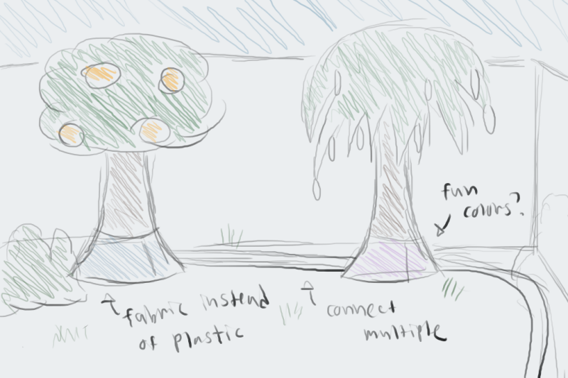

The average California family uses about 190 gallons water outdoors per household per day
Source: California Single Family Use Efficiency Study

The average excess irrigation use for all single-family accounts is estimated at 26.2 kgal per year
Source: EPA WaterSense
Our goal: Reduce household water usage by improving plant watering technology
Inspirations and concept
Pre-existing project: The Tree T-Pee
The Tree T-Pee consits of a plastic cone that traps evaporation off of tree roots. Agriculture research suggests the device can reduce water usage in irrigation.
Our Idea
Our aim was to create a Tree T-Pee for at-home use. Add automatic watering feature to prevent over-watering and more convenient to use. Make it more attractive to be used at home and non-invasive to one’s lifestyle
Results

Our code was comprised of a simple algorithm that if the humidity inside the tree skirt would be too low, it would water; else it would stay off to preserve water flow.

During the weekend we were able to scrap together this working prototype which was able to stop our water flow as to our requirements. For our demonstration we would blow air under the tree skirt and demonstrate the device stopping water flow.
Areas of improvement

Moving forward we would implement humidity requirments for different types of trees. It'd be as simple as the user selecting what type of tree they have and the device taking care of the rest. We'd include many sizes of tree skirt to expand the options unto bushes and shrubs. Working on an attractive appearance for the device.
back to main